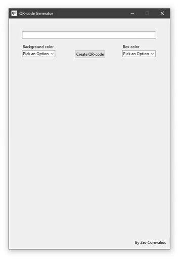

QR-code generator

Whenever i wanted to create a QR-code for a link i got frustrated because online generators require you to create an account and sometimes even pay! Thats why i made my own QR-code generator. Using python i made a simple UI that lets you enter a link and when you press create, it shows the QR-code with that link encoded. The program also saves the QR-code to your disk for easy sharing.
Take a look at the code here:
# Import all the needed packages
import qrcode
import tkinter as tk
import tkinter.ttk as ttk
from PIL import ImageTk, Image
# Create a windows window
window = tk.Tk()
window.title(" QR-code Generator ")
window.geometry("490x700")
window.resizable(False, False)
window.iconbitmap('path')
# The function that activates when the button is pressed
def create():
global img
qr = qrcode.QRCode(
version=1,
error_correction=qrcode.constants.ERROR_CORRECT_L,
box_size=12,
border=2,
)
qr.add_data(input1.get())
qr.make(fit=True)
txt1 = combo1.get()
txt2 = combo2.get()
img = qr.make_image(fill_color=txt2.lower(), back_color=txt1.lower())
img.save('QRcode.png')
img = ImageTk.PhotoImage(Image.open("QRcode.png"))
frame = ttk.Frame(window, width = 418, height =418)
frame.place(x=38,y=150)
frame['borderwidth'] = 2
frame['relief'] = 'flat'
label = tk.Label(frame, image = img)
label.pack()
# Create the color selection boxes
inputlist = ["White", "Black","Red", "Green", "Blue", "Yellow", "Pink", "Purple", "Orange", "Gray"]
combo1 = ttk.Combobox(window, values = inputlist, width = 13, state = "readonly")
combo1.set("Pick an Option")
combo1.place(x=40,y=96)
combo2 = ttk.Combobox(window, values = inputlist, width = 13, state = "readonly")
combo2.set("Pick an Option")
combo2.place(x=345,y=96)
# Create the create button
btn1 = ttk.Button(window, text="Create QR-code", command=create)
btn1.place(x=200,y=96)
# Create the text input box
input1 = tk.StringVar()
inputbox = ttk.Entry(window, width = 67,textvariable=input1)
inputbox.place(x=40, y=40)
# Text
credit = ttk.Label(window, text = "By Zev Comvalius")
font=("Calibri 30 bold")
credit.place(x=382,y=670)
bckgrndtxt = ttk.Label(window, text = "Background color")
font=("Calibri 30 bold")
bckgrndtxt.place(x=40,y=76)
boxtxt = ttk.Label(window, text = "Box color")
font=("Calibri 30 bold")
boxtxt.place(x=345,y=76)
window.mainloop()